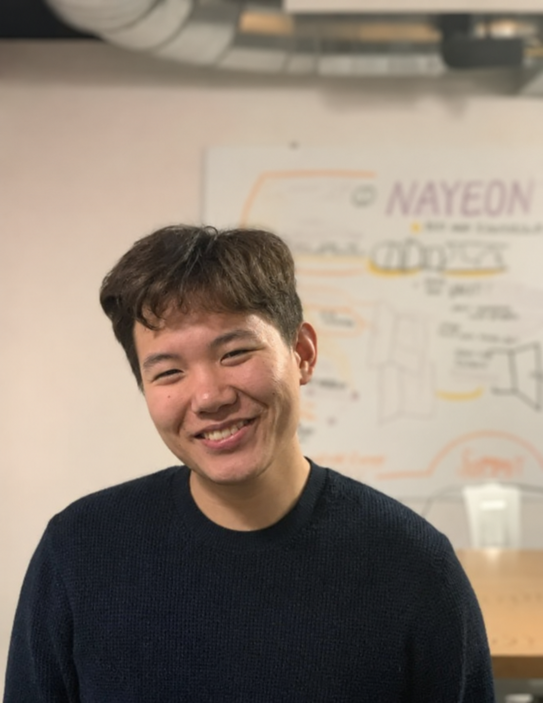

Report
Research Scientist · Meta MSL
Jang Hyun (Vincent) Cho
I build multimodal systems that learn from the messy, unstructured world—spanning visual representation learning, vision-language models, and spatial reasoning.

San Francisco, CA01 About
Research at the intersection of vision and language.
I am a Research Scientist at Meta Superintelligence Labs (MSL), where I work on visual perception and multimodal intelligence.
I earned my Ph.D. in Computer Science from UT Austin, advised by Prof. Philipp Krähenbühl. Before that, I received my B.S. in Computer Science from Cornell University, where I worked with Prof. Bharath Hariharan and Prof. Kavita Bala. I have also worked at NVIDIA and Meta FAIR.
Multimodal reasoning
Vision-language models
Visual representation learning
2D & 3D understanding
02 News
Recent updates
-
PerceptionLM and Perception Encoder were presented at NeurIPS; PerceptionLM received a spotlight.
-
I completed my Ph.D. defense at UT Austin.
-
Cube-LLM was accepted to ICLR 2025.
-
I joined Meta as a Research Scientist.
03 Work
Publications
All records on Google Scholar ↗2026
Report
2025
PerceptionLM: Open-Access Data and Models for Detailed Visual Understanding
Spotlight · Joint first author
Perception Encoder: The Best Visual Embeddings Are Not at the Output of the Network
Joint first author
VILA²: VILA Augmented VILA
Oral presentation
Language-Image Models with 3D Understanding
Thesis
Learning Vision Language Models from a Messy and Unstructured World
2023
PartDistillation: Learning Parts from Instance Segmentation
2022
NMS Strikes Back
Long-Tail Detection with Effective Class-Margins
Oral presentation
2021